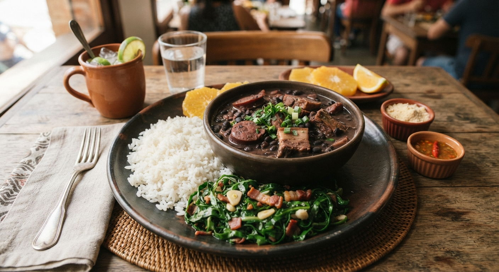

Feijoada Tradicional Brasileira
Considerada o prato nacional do Brasil, a feijoada é uma rica e reconfortante combinação de feijão preto cozido lentamente com várias carnes de porco e bovina, servida com acompanhamentos clássicos.

⏱️ Tempo: 3h
🍽️ Rendimento: 6 a 8 porções
🔥 Dificuldade: Média
Ingredientes
- 500g de feijão preto
- 200g de carne-seca desalgada
- 200g de costelinha de porco
- 150g de lombo suíno salgado
- 150g de paio e linguiça calabresa
- 150g de bacon em cubos
- 1 cebola grande picada
- 4 dentes de alho picados
- Folhas de louro, sal e pimenta-do-reino a gosto
Modo de Preparo
- Deixe as carnes salgadas de molho em água fria na geladeira de um dia para o outro, trocando a água de vez em quando.
- Cozinhe as carnes mais duras (carne-seca, lombo e costelinha) em água até que fiquem macias. Reserve.
- Em uma panela grande, cozinhe o feijão preto com água e as folhas de louro.
- Numa frigideira grande, doure o bacon, frite a calabresa e o paio, e refogue a cebola e o alho.
- Junte as carnes cozidas e o refogado à panela do feijão. Deixe apurar em fogo baixo para o caldo engrossar e os sabores se misturarem.
- Sirva bem quente acompanhado de arroz branco, couve refogada no alho, farofa e fatias de laranja.